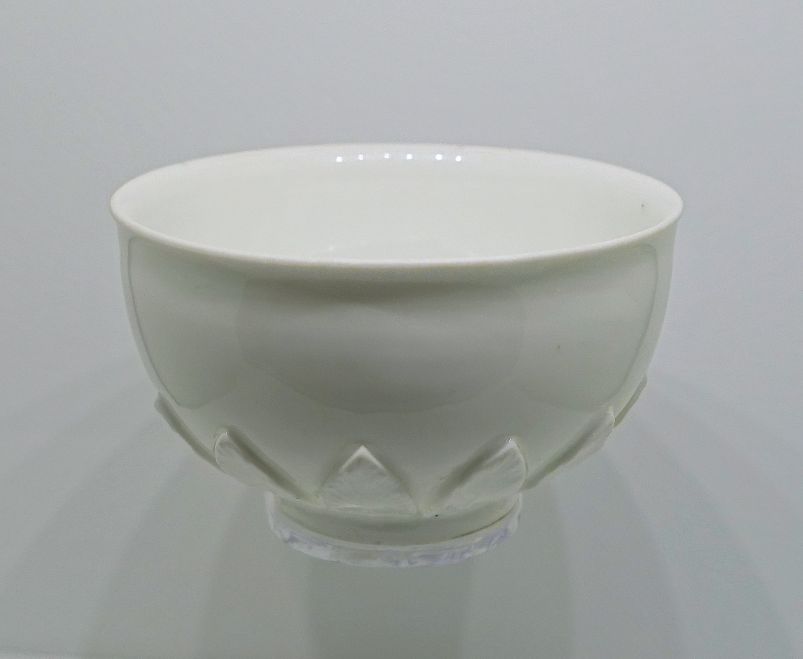

The content of this page has been slightly adapted from the Wikipedia page on ISO 3103 https://en.wikipedia.org/wiki/ISO_3103
ISO 3103 is a standard published by the International Organization for Standardization (commonly referred to as ISO), specifying a standardized method for brewing tea, possibly sampled by the standardized methods described in ISO 1839. It was originally laid down in 1980 as BS 6008:1980 by the British Standards Institution, and a revision was published in December, 2019 as ISO/NP 3103. It was produced by ISO Technical Committee 34 (Food products), Sub-Committee 8 (Tea).
The abstract states the following:
The method consists in extracting of soluble substances in dried tea leaf, contained in a porcelain or earthenware pot, by means of freshly boiling water, pouring of the liquor into a white porcelain or earthenware bowl, examination of the organoleptic properties of the infused leaf, and of the liquor with or without milk, or both.
This standard is not meant to define the proper method for brewing tea intended for general consumption, but rather to document a tea brewing procedure where meaningful sensory comparisons can be made. An example of such a test would be a taste-test to establish which blend of teas to choose for a particular brand or basic label in order to maintain a consistent tasting brewed drink from harvest to harvest. Some would contend that oversteeping the tea is not a valid way to make meaningful sensory comparisons.
The work was the winner of the parodic Ig Nobel Prize for Literature in 1999.

To maintain consistent results, the following are recommendations given by the standard:
| Pot | Volume | Weight |
|---|---|---|
| large | 310 ml (±8 ml) | 200 g (±10 g) |
| small | 350 ml (±4 ml) | 118 g (±10 g) |
| Bowl | Capacity | Weight |
|---|---|---|
| large | 380 ml | 200 g (±20 g) |
| small | 200 ml | 105 g (±20 g) |
An annex of the standard describes two alternative pots (310 ml and 150 ml) and corresponding bowls (380 ml and 200 ml) "which are in widespread use" for tea tasting, including engineering drawings of their cross sections. The type of pot described is also known as a taster's mug.
The protocol has been criticized for omitting any mention of prewarming the pot. Ireland was the only country to object, and objected on technical grounds.
In 2003, the Royal Society of Chemistry published a press release entitled "How to make a Perfect Cup of Tea".
Example of a formula:
\[ x = \frac{-b \pm \sqrt{b^2-4ac}}{2a} \]